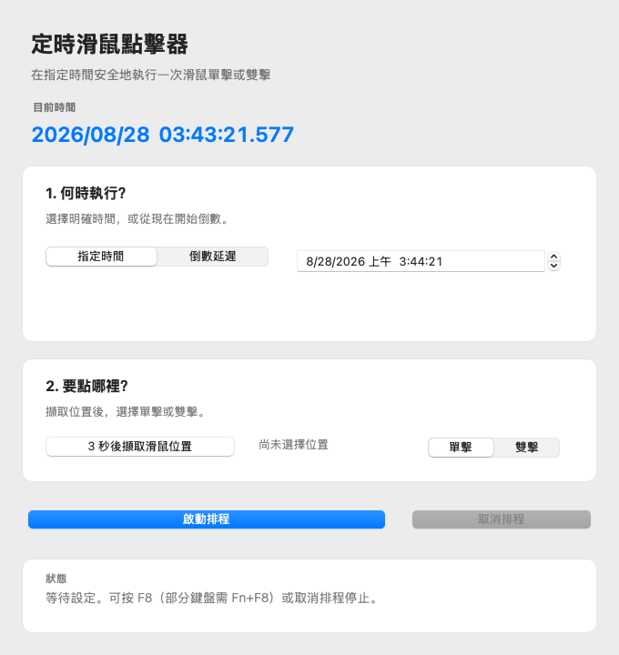
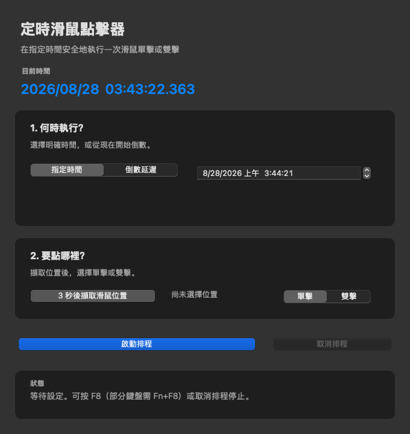

Apple silicon and Intel in one application
The download is a universal app containing both arm64 and x86_64 architectures. It supports macOS 13 Ventura or later and does not require a third-party runtime.
Why Accessibility permission is required
macOS prevents ordinary applications from controlling the pointer without explicit approval. ScheduledClicker checks the permission before arming. Open System Settings → Privacy & Security → Accessibility, enable ScheduledClicker, then return and arm the schedule again.
What version 1.1.2 improves
The current clock still displays three millisecond digits, but its UI now refreshes around 30 times per second instead of 10. This makes all three digits vary naturally without changing the separate scheduling engine. Light and Dark appearance, exact-time and delay visibility, universal architecture, plist, signature, and package checks run in CI.
First launch and signing
The app is ad-hoc signed but not Apple Developer ID signed or notarized. On first launch, Control-click the app, choose Open, and approve it in Privacy & Security if macOS blocks it. This limitation is documented rather than hidden.
macOS 繁體中文摘要
macOS 版支援 macOS 13 以上、Apple silicon 與 Intel Mac，介面會跟隨淺色或深色外觀。第一次啟動排程前，必須由使用者在「輔助使用」設定授權。